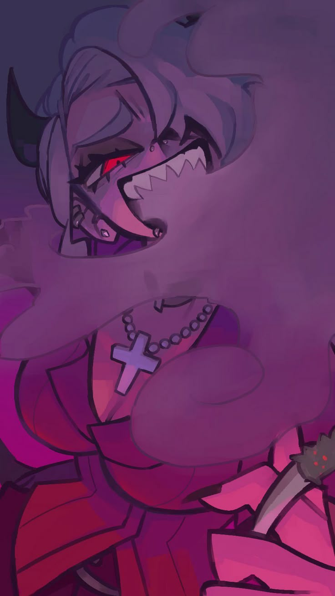

О нас
Art Oasis — это онлайн-платформа, созданная с искренней целью поддержки молодых художников и творческих людей, стремящихся заявить о себе в мире искусства. Наша миссия — объединить талантливых авторов в едином, динамичном и интерактивном онлайн-пространстве, где они могут не только делиться своими уникальными работами, но и находить ценное вдохновение, конструктивную критику и, конечно же, заслуженное признание. Art Oasis — это не просто галерея, это полноценная экосистема, разработанная с учетом потребностей современного художника. Мы предоставляем широкий спектр инструментов и ресурсов, способствующих развитию и продвижению таланта. На платформе можно создавать персональные профили с подробным описанием творческого пути, выставлять свои работы в высоком разрешении, участвовать в тематических конкурсах и челленджах, получать обратную связь от других художников и искусствоведов, а также продавать свои произведения искусства напрямую коллекционерам и ценителям. Особенностью Art Oasis является акцент на создании сильного и поддерживающего сообщества. Мы регулярно проводим онлайн-воркшопы, мастер-классы и вебинары с участием известных художников и экспертов индустрии, где молодые авторы могут получить ценные знания, освоить новые техники и узнать о последних тенденциях в мире искусства. Наша система рейтингов и отзывов помогает выявлять наиболее талантливых и перспективных авторов, а встроенный форум и чаты способствуют активному общению и обмену опытом между участниками. Кроме того, Art Oasis сотрудничает с различными галереями, арт-дилерами и кураторами, предлагая молодым художникам возможности для выставок и участия в реальных арт-проектах. Мы стремимся стать надежным мостом между начинающими талантами и профессиональным арт-миром, помогая им сделать первые шаги к успешной карьере. В Art Oasis каждый может найти что-то для себя, независимо от уровня мастерства и направления творчества. Присоединяйтесь к нашему сообществу, чтобы делиться своим искусством, вдохновляться, учиться и расти вместе с нами! Мы верим, что каждый талант заслуживает быть увиденным и оцененным, и Art Oasis — идеальное место для этого. Мы также планируем развивать следующие направления: • Интеграция с технологиями искусственного интеллекта: для помощи в создании работ, анализе трендов и рекомендациях для художников. • Развитие NFT-направления: для предоставления художникам новых возможностей монетизации своего творчества. • Расширение географии сотрудничества: привлечение художников и партнеров со всего мира. • Создание мобильного приложения: для удобного доступа к платформе с любого устройства. Art Oasis — это не просто платформа, это инвестиция в будущее искусства, где каждый талант имеет шанс раскрыться и засиять во всей красе.
Наша команда
